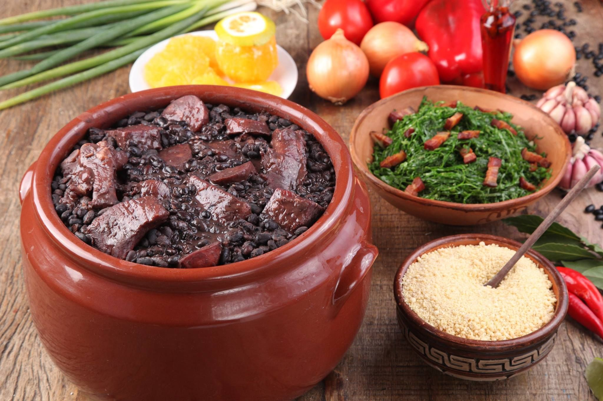

A FeijoArca é um Mini Local De Preparação Focamos No Melhor Prato Para Você,
A feijoada é um dos pratos típicos mais conhecidos e populares da culinária brasileira.
Composta basicamente por feijão preto, diversas partes do porco, linguiça, farinha e o acompanhamento de verduras e legumes.
Uma feijoada completa, digna de restaurante, mas feita em casa, com os pertences que você preferir! Na receita tem a nossa sugestão de combinação, mas no fim tem proporção para você escolher. O passo a passo bem detalhado garante a feijoada saborosa e nada pesada.